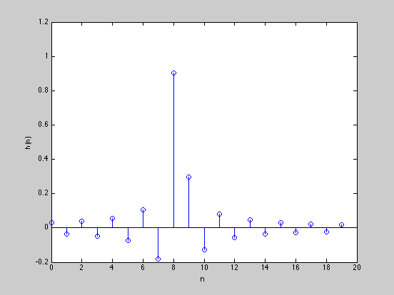
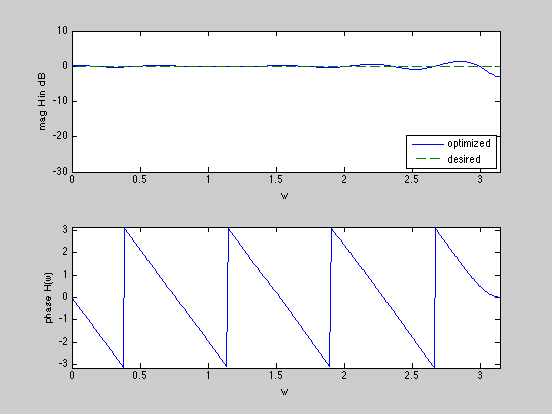

Chebychev design of an FIR filter given a desired H(w)
n = 20;
m = 15*n;
w = linspace(0,pi,m)';
D = 8.25;
Hdes = exp(-j*D*w);
A = exp( -j*kron(w,[0:n-1]) );
cvx_begin
variable h(n,1)
minimize( max( abs( A*h - Hdes ) ) )
cvx_end
disp(['Problem is ' cvx_status])
if ~strfind(cvx_status,'Solved')
h = [];
end
figure(1)
stem([0:n-1],h)
xlabel('n')
ylabel('h(n)')
H = [exp(-j*kron(w,[0:n-1]))]*h;
figure(2)
subplot(2,1,1);
plot(w,20*log10(abs(H)),w,20*log10(abs(Hdes)),'--')
xlabel('w')
ylabel('mag H in dB')
axis([0 pi -30 10])
legend('optimized','desired','Location','SouthEast')
subplot(2,1,2)
plot(w,angle(H))
axis([0,pi,-pi,pi])
xlabel('w'), ylabel('phase H(w)')
Calling SDPT3: 899 variables, 21 equality constraints
For improved efficiency, SDPT3 is solving the dual problem.
------------------------------------------------------------
num. of constraints = 21
dim. of socp var = 899, num. of socp blk = 300
*******************************************************************
SDPT3: Infeasible path-following algorithms
*******************************************************************
version predcorr gam expon scale_data
NT 1 0.000 1 0
it pstep dstep pinfeas dinfeas gap mean(obj) cputime
-------------------------------------------------------------------
0|0.000|0.000|2.6e+02|1.7e+01|9.5e+03| 0.000000e+00| 0:0:00| chol 1 1
1|0.988|1.000|3.2e+00|9.5e-02|1.3e+02|-9.076616e+00| 0:0:00| chol 1 1
2|1.000|1.000|1.0e-07|9.5e-03|1.4e+01|-6.803703e+00| 0:0:00| chol 1 1
3|1.000|0.934|1.9e-08|1.5e-03|9.1e-01|-4.552985e-01| 0:0:00| chol 1 1
4|1.000|0.310|4.3e-09|1.1e-03|6.4e-01|-4.023050e-01| 0:0:00| chol 1 1
5|0.062|1.000|4.0e-09|9.5e-06|1.9e+00|-1.176354e+00| 0:0:00| chol 1 1
6|1.000|0.808|1.2e-11|2.6e-06|4.4e-01|-5.406228e-01| 0:0:00| chol 1 1
7|0.739|1.000|3.2e-12|9.5e-08|1.3e-01|-6.933045e-01| 0:0:00| chol 1 1
8|0.959|0.980|5.4e-13|1.1e-08|4.4e-03|-7.060849e-01| 0:0:00| chol 1 1
9|0.987|0.988|2.0e-13|1.1e-09|5.5e-05|-7.070928e-01| 0:0:00| chol 1 1
10|0.989|0.989|2.3e-15|1.3e-11|8.1e-07|-7.071065e-01| 0:0:00| chol 1 1
11|0.534|0.946|4.3e-15|1.7e-12|3.7e-07|-7.071066e-01| 0:0:00| chol 1 1
12|0.536|0.955|2.4e-13|1.1e-12|2.0e-07|-7.071067e-01| 0:0:00| chol 1 1
13|0.536|1.000|5.0e-12|1.0e-12|1.1e-07|-7.071067e-01| 0:0:00| chol 1 2
14|0.537|1.000|2.3e-12|1.0e-12|6.3e-08|-7.071067e-01| 0:0:01| chol 1 2
15|0.539|1.000|1.1e-12|1.0e-12|3.5e-08|-7.071068e-01| 0:0:01|
stop: max(relative gap, infeasibilities) < 1.49e-08
-------------------------------------------------------------------
number of iterations = 15
primal objective value = -7.07106746e-01
dual objective value = -7.07106781e-01
gap := trace(XZ) = 3.53e-08
relative gap = 1.46e-08
actual relative gap = 1.46e-08
rel. primal infeas = 1.07e-12
rel. dual infeas = 1.00e-12
norm(X), norm(y), norm(Z) = 1.4e+00, 1.2e+00, 1.2e+01
norm(A), norm(b), norm(C) = 8.0e+01, 2.0e+00, 1.8e+01
Total CPU time (secs) = 0.5
CPU time per iteration = 0.0
termination code = 0
DIMACS: 1.1e-12 0.0e+00 9.2e-12 0.0e+00 1.5e-08 1.5e-08
-------------------------------------------------------------------
------------------------------------------------------------
Status: Solved
Optimal value (cvx_optval): +0.707107
Problem is Solved
 